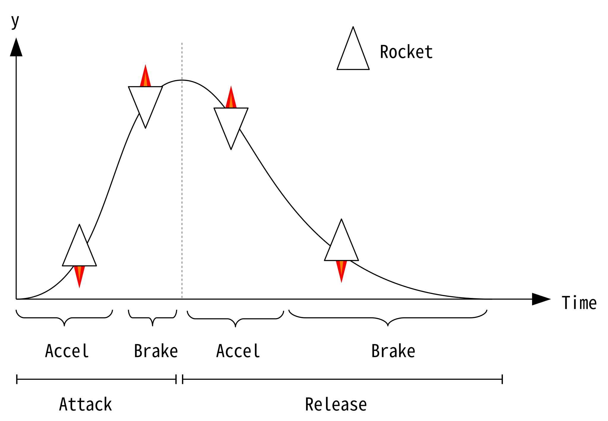
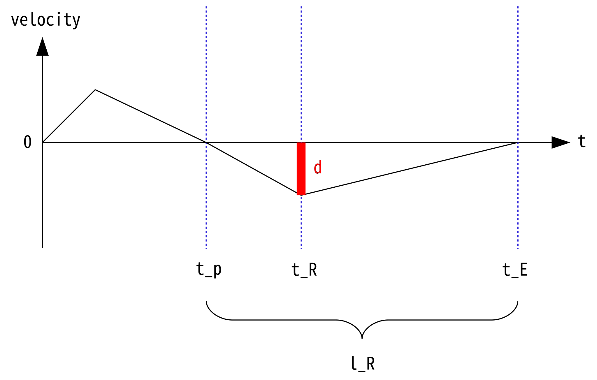

何かあれば GitHub のリポジトリに issue を作るか ryukau@gmail.com までお気軽にどうぞ。
Update: 2020-03-25
加速度が一定のときに現れる放物線を使ってエンベロープを作ります。次の図は例として加速度が一定のエンジンを積んだロケットをある点から別の点へ移動させて戻ってくるモデルを表しています。

アタックの区間での加速度 \(a_A\) と \(b_A\) 、加速から減速に切り替える時点 \(t_A\) をユーザが指定するときに、曲線の最大値となるピーク \(h_p\) とその時点 \(t_p\) を求めます。
下付き文字の \(A\) はアタックのパラメータを表しています。
まずは時点 \(t_A\) での位置 \(h_A\) と速度 \(v_A\) を知りたいです。アタックの加速中の加速度の式 \(\ddot{y_A}(t)\) から速度の式と位置の式を求めます。
\[ \begin{aligned} \ddot{y_A}(t) &= a_A \\ \dot{y_A}(t) &= \int \ddot{y_A}(t)\,dt = a_A t \\ y_A(t) &= \int \dot{y_A}(t)\,dt = a_A \frac{t^2}{2} \end{aligned} \]
速度と位置の式に \(t_A\) を代入して、それぞれ \(v_A, h_A\) とします。 \(v_A, h_A\) はアタックの減速中の式の初期状態になります。
\[ \begin{aligned} v_A &= \dot{y_A}(t_A) = a_A t_A \\ h_A &= y_A(t_A) = a_A \dfrac{t_A^2}{2} \end{aligned} \]
アタックの減速中の加速度の式 \(\ddot{y_p}(t)\) から速度と位置の式を求めます。
\[ \begin{aligned} \ddot{y_p}(\tau_k) &= - b_A \\ \dot{y_p}(\tau_k) &= - b_A \tau_k + v_A \\ y_p(\tau_k) &= - b_A \frac{\tau_k^2}{2} + v_A \tau_k + h_A \\ \tau_k &= t - t_A \end{aligned} \]
\(\dot{y_p}(t_p) = 0\) となる時点 \(t_p\) を求めます。
\[ \begin{aligned} 0 &= - b_A t_p + v_A \\ t_p &= \frac{v_A}{b_A} \end{aligned} \]
\(y_p(t_p) = h_p\) となります。
\[ \begin{aligned} h_p &= y_p(t_p) \\ &= y_p\left( \frac{v_A}{b_A} \right) \\ &= -\frac{b_A}{2} \left( \frac{v_A}{b_A} \right)^2 + v_A \left( \frac{v_A}{b_A} \right) + h_A \end{aligned} \]
\(h_{p} = 1\) となるような \(a_A\) と \(b_A\) への係数 \(\nu\) を決めます。
\[ \begin{aligned} h_{p} = 1 &= - \nu b_A \frac{t_p^2}{2} + v_A t_p + h_A \\ v_A &= \nu a_A t_A \\ h_A &= v_A \dfrac{t_A}{2} \\ t_p &= \frac{v_A}{\nu b_A} \end{aligned} \]
Maxima で解きます。
v_A: ν * a_A * t_A;
h_A: v_A * t_A / 2;
t_p: v_A / (ν * b_A);
solve(1 = - (ν * b_A * t_p^2) / 2 + v_A * t_p + h_A, ν);得られた \(\nu\) です。
\[ \nu=\frac{2 {b_A}}{\left( {a_A} {b_A}+{{{a_A}}^{2}}\right) {{{t_A}}^{2}}} \]
Python3 です。
import numpy
import matplotlib.pyplot as pyplot
class AccelEnvelope:
"""
timeR はピーク時間 t_p からのオフセット。 例えば t_p = 1 かつ timeR = 0.5 なら
リリースの加速度の変更はエンベロープの開始から 1.5 秒後となる。
"""
def __init__(
self,
samplerate: float,
accelA: float,
brakeA: float,
timeA: float,
accelR: float,
brakeR: float,
timeR: float,
):
self.counter: int = -1
self.y: float = 0
self.vy: float = 0
self.v_A: float = accelA * timeA
self.h_A: float = accelA * timeA * timeA / 2
self.t_p: float = self.v_A / brakeA
self.h_p: float = -brakeA / 2 * self.t_p * self.t_p \
+ self.v_A * self.t_p + self.h_A
self.v_R: float = accelR * timeR
self.h_R: float = accelR * timeR * timeR / 2
self.t_E: float = self.v_R / brakeR
self.h_E: float = -brakeR / 2 * self.t_E * self.t_E \
+ self.v_R * self.t_E + self.h_R
# Normalize
accelA, brakeA = AccelEnvelope.normalize(accelA, brakeA, timeA)
accelR, brakeR = AccelEnvelope.normalize(accelR, brakeR, timeR)
# Change time unit from seconds to samples.
fs2 = samplerate * samplerate
self.accelA: float = accelA / fs2
self.brakeA: float = brakeA / fs2
self.timeA: int = int(timeA * samplerate)
self.n_p: int = int((self.t_p + timeA) * samplerate)
self.accelR: float = accelR / fs2
self.brakeR: float = brakeR / fs2
self.timeR: int = self.n_p + int(timeR * samplerate)
self.n_E: int = self.n_p + int((self.t_E + timeR) * samplerate)
def normalize(accel, brake, time):
nu = 2 * brake / ((accel * brake + accel * accel) * time * time)
return (accel * nu, brake * nu)
def process(self):
self.counter += 1
if self.counter < self.timeA:
self.vy += self.accelA
elif self.counter < self.n_p:
self.vy -= self.brakeA
elif self.counter == self.n_p: # 念のため。
self.vy = 0
return self.y
elif self.counter < self.timeR:
self.vy -= self.accelR
elif self.counter < self.n_E and self.y > 0:
self.vy += self.brakeR
else:
return 0
self.y += self.vy
return self.y
samplerate = 48000
envelope = AccelEnvelope(samplerate, 0.001, 0.002, 0.5, 0.0003, 0.0004, 1.0)
data = [envelope.process() for _ in range(3 * samplerate)]
pyplot.plot(data, color="black", label="Envelope")
pyplot.show()出力です。
終端の処理が適当なので小さなギャップがあります。
ユーザが指定した時間 \(l\) と変曲点 \(\beta\) から加速度 \(a, b\) を決めます。
ここではリリースの加速度 \(a_R\) と \(b_R\) を求めます。アタックの加速度も同様に求めることができます。
記号の定義です。
下付き文字の \(R\) はリリース、 \(E\) はエンベロープの終端に関するパラメータを表しています。アタックのときとは \(y\) について上下を逆にして \(t_p \text{--} t_R\) 間で加速、 \(t_R \text{--} t_E\) 間で減速します。
\(t_R\) の定義です。 \(\beta_R\) はユーザが操作できるパラメータで範囲は \(0 < \beta_R < 1\) です。
\[ t_R = t_p + \beta_R l_R \]
\(h_p = 1\) に正規化されていると仮定しています。
\(t_p \text{--} t_R\) 間の加速の式です。
\[ \begin{aligned} \ddot{y}_R (\tau_R) &= -a_R \\ \dot{y}_R(\tau_R) &= -a_R \tau_R \\ y_R(\tau_R) &= -a_R \frac{\tau_R^2}{2} + 1 \\ \tau_R &= t - t_p \end{aligned} \]
\(t_R \text{--} t_E\) 間の減速の式です。
\[ \begin{aligned} \ddot{y}_E (\tau_E) &= b_R \\ \dot{y}_E(\tau_E) &= b_R \tau_E + v_R \\ y_E(\tau_E) &= b_R \frac{\tau_E^2}{2} + v_R \tau_E + h_R \\ \tau_E &= t - t_R \end{aligned} \]
速度の振る舞いは次の図のようになります。

ピークの高さは 1 に正規化されているので、 \(t_p \text{--} t_E\) 間の三角形の面積が \(\dfrac{l_R d}{2} = 1\) となるように \(a_R\) と \(b_R\) を決めます。この三角形の面積は移動距離を表しています。
\[ d = \frac{2}{l_R}, \quad t_R = t_p + \beta_R l_R \]
\(t_p \text{--} t_R\) 間の三角形の面積を求める式から \(a_R\) が求められます。
\[ \begin{aligned} a_R \beta_R l_R &= \frac{2}{l_R} \\ a_R &= \frac{2}{\beta_R l_R^2} \\ \end{aligned} \]
\(t_R \text{--} t_E\) 間の三角形の面積を求める式から \(b_R\) が求められます。
\[ \begin{aligned} b_R (1 - \beta_R) l_R &= \frac{2}{l_R} \\ b_R &= \frac{2}{(1 - \beta_R) l_R^2} \\ \end{aligned} \]
Python3 です。
import numpy
import matplotlib.pyplot as pyplot
class AccelEnvelope:
def __init__(
self,
samplerate: float,
lengthA: float, # In seconds.
betaA: float, # In (0, 1).
lengthR: float, # In seconds.
betaR: float, # In (0, 1).
):
self.counter: int = -1
self.y: float = 0
self.vy: float = 0
fs2 = samplerate * samplerate
self.a_A: float = 2 / (betaA * lengthA * lengthA) / fs2
self.b_A: float = 2 / ((1 - betaA) * lengthA * lengthA) / fs2
self.n_A: int = int(lengthA * betaA * samplerate)
self.n_p: int = int(lengthA * samplerate)
self.a_R: float = 2 / (betaR * lengthR * lengthR) / fs2
self.b_R: float = 2 / ((1 - betaR) * lengthR * lengthR) / fs2
self.n_R: int = self.n_p + int(lengthR * betaR * samplerate)
self.n_E: int = self.n_p + int(lengthR * samplerate)
def process(self):
self.counter += 1
if self.counter < self.n_A:
self.vy += self.a_A
elif self.counter < self.n_p:
self.vy -= self.b_A
elif self.counter == self.n_p: # 念のため。
self.vy = 0
return self.y
elif self.counter < self.n_R:
self.vy -= self.a_R
elif self.counter < self.n_E and self.y > 0:
self.vy += self.b_R
else:
return 0
self.y += self.vy
return self.y
samplerate = 48000
envelope = AccelEnvelope(samplerate, 2, 0.2, 3, 0.8)
data = [envelope.process() for _ in range(6 * samplerate)]
pyplot.plot(data, color="black", label="Envelope")
pyplot.show()出力です。この実装も終端の処理が適当なので小さなギャップがあります。また \(\beta\) の方向がアタックとリリースで逆になっています。
位置 \(\hat{y}_A(t)\) の式です。
\[ \hat{y}_A(t) = \begin{cases} \gamma^t a_A \dfrac{t^2}{2}, & \text{if} \enspace 0 \leq t \leq t_A, \\ \\ \gamma^t \left(- b_A \dfrac{t^2}{2} + \hat{v}_A t + \hat{h}_A \right), & \text{if} \enspace t_A \leq t \leq t_p, \\ \\ \gamma^t, & \text{if} \enspace t_p \leq t. \\ \end{cases} \]
\(\gamma\) は 0 以下です。
次の手順でピークに到達する時点 \(t_k\) のある範囲を調べます。
区間 \(0 \leq t \leq t_A\) での速度 \(\hat{\dot{y}}_A(t)\) を求めます。 Maxima を使います。
\[ \begin{aligned} \dot{\hat{y}}_A(t) &= \frac{a_A t^2 \gamma^t \log \gamma}{2}+{a_A} t \gamma^t \\ &= \gamma^t a_A t \left( \frac{t}{2} \log \gamma + 1 \right), \qquad 0 \leq t \leq t_A. \end{aligned} \]
時点 \(t_A\) での速度 \(\hat{v}_A\) と位置 \(\hat{h}_A\) の式です。
\[ \begin{aligned} \hat{v}_A &= \dot{\hat{y}}_A(t_A) = \gamma^{t_A} a_A t_A \left( \frac{t_A}{2} \log \gamma + 1 \right) \\ \hat{h}_A &= \hat{y}_A(t_A) = \gamma^{t_A} a_A \dfrac{t_A^2}{2} \\ \end{aligned} \]
\(\hat{v}_A\) が負の値なら \(\hat{y}\) のピークは \(0 \leq t < t_A\) のどこかにあります。負の値になるのは \(\gamma\) だけなので、 \(\left( \dfrac{t_A}{2} \log \gamma + 1 \right)\) が 0 以下になるかどうかを調べれば十分です。判定式を変形すると次の形になります。
\[ t_A \log \gamma \leq -2 \]
\(\dot{\hat{y}}_A(t) = 0\) となる時点 \(t_{k, A}\) を求めます。
2 つの解が得られますが、 \(t = 0\) は使いません。エンベロープをトリガした瞬間の速度が 0 であることは事前に分かっているからです。よって \(t_{k, A}\) は次の式になります。
\[ t_{k, A} = - \frac{2}{\log \gamma} \]
区間 \(t_A \leq t \leq t_p\) で速度 \(\hat{\dot{y}}_A(t)\) が 0 になる時点 \(t_{k,p}\) を求めます。
2 つの解が得られました。
\[ \begin{aligned} t_{k,p,1} &= - \frac{ \sqrt{(v_A^2 + 2 b_A h_A) \left( \log \gamma \right)^2 + b_A^2} - v_A \log \gamma + b_A }{ b_A \log \gamma } \\ t_{k,p,2} &= \frac{ \sqrt{(v_A^2+2 b_A h_A) \left( \log \gamma \right)^2 + b_A^2} + v_A \log \gamma - b_A }{ b_A \log \gamma } \end{aligned} \]
実装して確認したところ \(t_{k,p,2}\) を使うと範囲 \([0, 1]\) の出力が得られました。
Python3 です。
import numpy
import math
import matplotlib.pyplot as pyplot
class AccelEnvelope:
def __init__(
self,
samplerate: float,
lengthA: float, # In seconds.
betaA: float, # In (0, 1).
decay: float, # In seconds.
):
# Palabolic attack.
self.counter: int = -1
self.y: float = 0
self.vy: float = 0
fs2 = samplerate * samplerate
self.a_A: float = 2 / (betaA * lengthA * lengthA) / fs2
self.b_A: float = 2 / ((1 - betaA) * lengthA * lengthA) / fs2
self.t_A: int = int(lengthA * betaA * samplerate)
self.t_p: int = int(lengthA * samplerate)
# Exponential decay.
self.threshold: float = 1e-5
self.γ_D: float = numpy.power(self.threshold, 1 / (decay * samplerate))
self.valueD: float = 1
# For normalization.
self.gain = 1 / self.getPeak()
# self.gain = 1 / self.getPeakAlt(samplerate, decay) # Same result.
def getPeak(self):
log_γ = numpy.log(self.γ_D)
if self.t_A * log_γ <= -2:
self.t_k = -2 / numpy.log(self.γ_D) # Assign to self.t_k for debug.
return self.γ_D**self.t_k * self.a_A * self.t_k * self.t_k / 2
temp = self.γ_D**self.t_A * self.a_A
v_A = temp * self.t_A * (self.t_A / 2 * log_γ + 1)
h_A = temp * self.t_A * self.t_A / 2
sqrt = numpy.sqrt((v_A * v_A + 2 * self.b_A * h_A) * log_γ * log_γ +
self.b_A * self.b_A)
t_k = (sqrt + v_A * log_γ - self.b_A) / (self.b_A * log_γ)
self.t_k = t_k + self.t_A
return self.γ_D**t_k * (-self.b_A * t_k * t_k / 2 + v_A * t_k + h_A)
def process(self):
self.counter += 1
if self.counter < self.t_A:
self.vy += self.a_A
self.y += self.vy
elif self.counter < self.t_p:
self.vy -= self.b_A
self.y += self.vy
self.valueD *= self.γ_D
return self.gain * self.y * self.valueD
samplerate = 48000
lengthA = 2
betaA = 0.2
decay = 4
envelope = AccelEnvelope(samplerate, lengthA, betaA, decay)
data = [envelope.process() for _ in range(int(decay * samplerate))]
pyplot.plot(data, color="black", label="Envelope")
pyplot.show()出力です。図よりピークが 1.0 より少し大きいことが見て取れます。
パラメータを変えて試したところ、ピークのばらつきは放物線のアタック時間 \(l_A\) が指数曲線のディケイ時間 \(t_D\) より小さくなるときだけ生じるようです。
アタックのパラメータ \(\beta\) と \(l_A\) を変えたときに実際のピークがどうなるのかプロットしました。ピークは \(\beta : l_A\) の比によって一定のようです。図を見ると \(\beta\) が 1.0 に近づくほどピークが 1.0 に近づいています。
別ページに別解を掲載しています。計算結果は同じですが log の代わりに exp が出てきます。